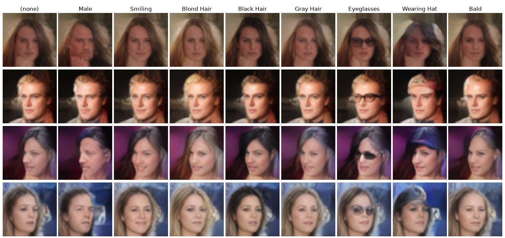
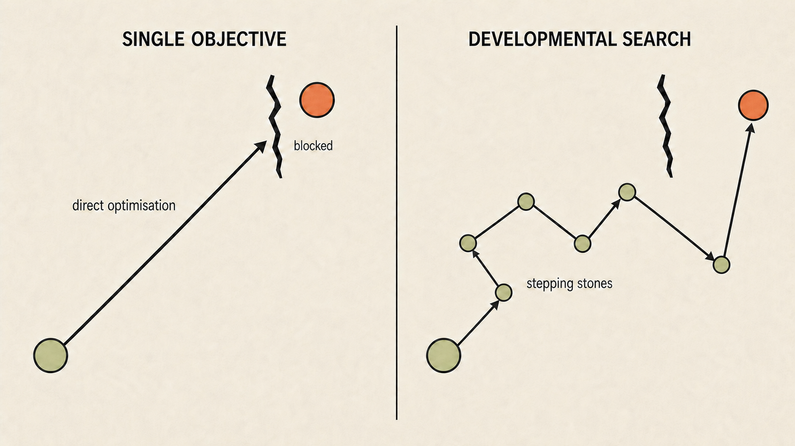
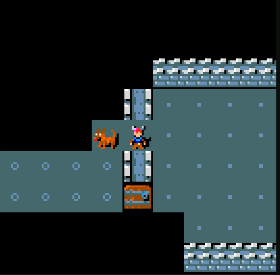
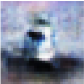
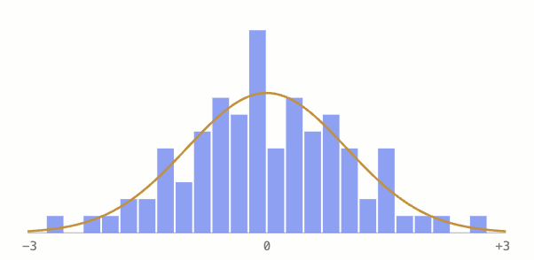
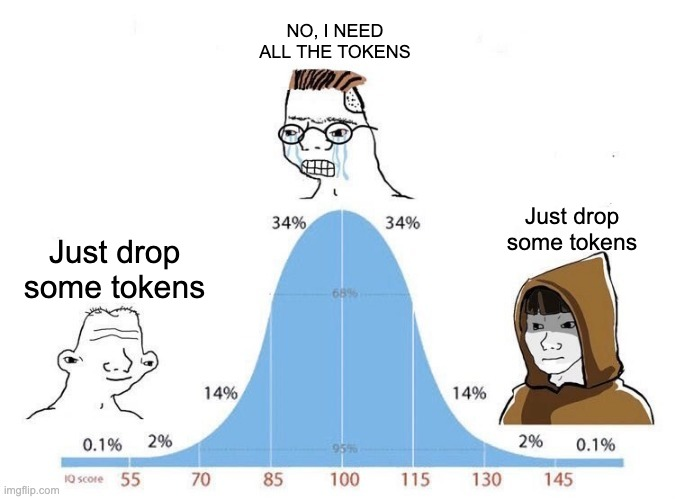
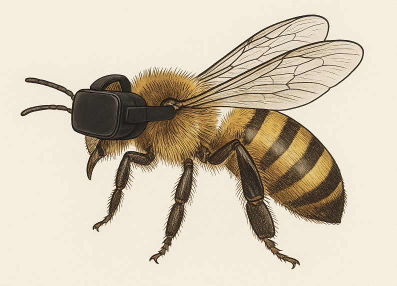

About Me
Hi, I’m Matteo Peluso. I think mostly about world modelling and curriculum, and the ideas behind them rather than any particular method. What does it take for a system to build a useful internal model of the world? What experiences, in what order?
I’m drawn to novel framings over incremental progress. This is where I share what I’m working on.
Blogs
-
Amortised Assignment Generation
One step generation by efficiently pre-assigning gaussian latents to samples.

-
Curriculum Mining
Beating AlphaZero policy networks with search-free self-play PPO, diverse resets and sparse terminal rewards.

-
Pan1ni
Making a goal seeking policy with video pretraining only

-
SDMatch
Sketched Distribution Matching: a direct loss for matching one distribution to another with random or learned projections.

-
Self-Teaching Autoencoder
A self-training autoencoder. Trained without reconstruction losses, pixel or otherwise, and no image-space supervision of any kind.
-
Practical notes on leJEPA
Pitfalls to watch for whilst using leJEPA, and a couple of failed experiments along the way.

-
la leWorldModel
Simultaneous latent action and world model learning from passive video for controllable prediction.
-
Tokens, who needs them?
Improving transformer memory efficiency by 2.7x

-
Optimiser? I Hardly Know 'Er.
Using LLM Program Search to Build Robot Controllers Without RL Optimisers
-
Training a model to open the gates of hell
This is a short fun blog in which I showcase an experiment in creating endless learnable content.
-
Curriculum Is Key: Stepping Stones Toward AGI
Exploratory post on curriculum as the missing ingredient required for true intelligence and creativity.
-
Microbiome Modelling
Microbiome World Modelling.

-
Self-Organising Text
Cellular Automata Inspired Self Organising Text
-
Sample Efficient AR Diffusion
Oniris: Autoregressive and Sample-Efficient Next-Gen Video Diffusion
